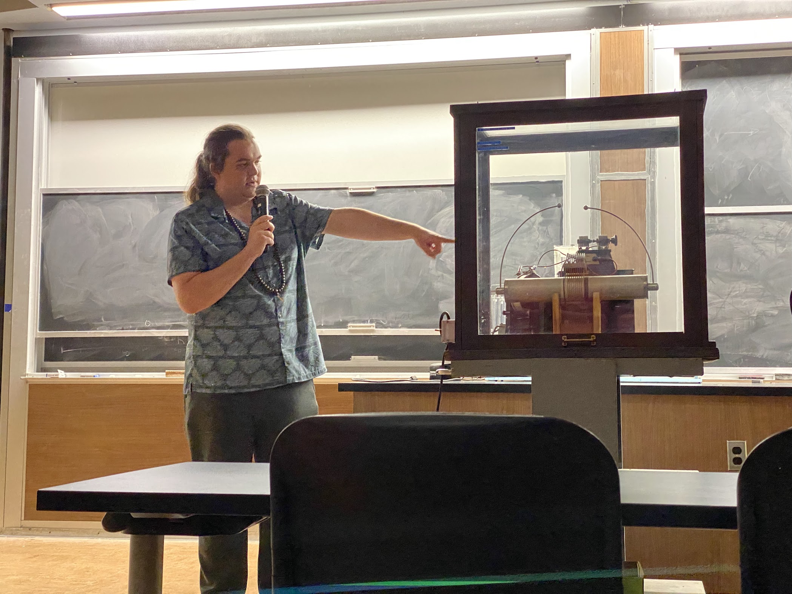

Outreach, Tutoring, and Teaching
Teaching
- In spring of 2026 I was a teaching assistant for PHYS375, Modern Physics. Modern Physics is the class
most people take before quantum, and it covers thermodynamics, special relativity, as well as some introductory
quantum topics. While being a TA I graded homework and exams, held office hours, and attended classes to
help answer questions. It was a lot of fun, and I am looking forward to TAing again in the fall!
- In the fall of 2026 I will be a TA for PHYS401, Quantum Physics 1. I am really looking forward to it, since
quantum was one of my favorite physics classes ever.
Outreach
I am very passionate about science outreach. I think it is extremely important that we as scientists
communicate science and physics to the public in an accessible way. For the past couple of years I have
volunteered at quite a lot (over twenty) science outreach events at UMD. These include
Physics is Phun,
Discovery Days,
high school visits, and other events. Here are some of the events I have volunteered at:
- Maryland Day 2024; April 27, 2024
- Physics is Phun: The Physics of Sound; September 26 – 27, 2024
- Physics is Phun: Spooky Science Show; October 25 – 26, 2024
- Spooky Science Discovery Day; October 26, 2024
- Maryland Day 2025; April 26, 2025
- Physics is Phun: A Show of Fire and Ice; December 6 – 7, 2024
- Fun with Thermodynamics Discovery Day; December 7, 2024
- Physics is Phun: The Physics of Film; February 7 – 8, 2025
- Physics is Phun: The Physics of Flight; March 7 – 8, 2025
- Flight Discovery Day; March 8, 2025
- Physics is Phun: The Physics of Sound; September 26 – 27, 2025
- Physics is Phun: Spooky Science Show; October 24 – 25, 2025
- Spooky Science Discovery Day; October 25, 2025
- Physics Homeschool Discovery Day; November 15, 2025
- Rockville High School visit; December 16, 2025
- High School Field Trip for CCPCS; March 19, 2026
- University of Maryland Physics Department Admitted Graduate Student Day: March 27, 2026
- Maryland Day 2026; April 25, 2026
- LISA Symposium 2026; June 21, 2026
My role at these events has varied, but I often present demonstrations and help to plan and organize events.

Me demonstrating a how a Tesla coil works at a Physics is Phun show! Image credit: my dad.
Tutoring
The UMD chapter of the Society of Physics Students provides tutoring to undergraduates. This service benefits
both physics majors, and a variety of other students taking classes in the physics department. I have been a tutor
for SPS since my second year at UMD.
Summer Camps
- I was a camp counselor in the summer of 2026 for two summer camps at the UMD physics department.
The first is the Amazing Science Discovery Camp, which is targeted at elementary school age kids, and the
Advanced Physics Program, which is meant for high schoolers.
- The Science Discovery Camp gives younger kids a fun introduction to lots of different types of science,
including engineering, physics, chemistry, astronomy, and biology. We did lots of hands on activities, and
I got to lead the nanotechnology lessons which was a lot of fun!
- The Advanced Physics Prgoram is meant to give older kids a more rigorous introduction to physics and
engineering. We teach soldering, programming with arduinos, as well as some kinematics and basic calculus. I got to
help lead several activities, including the introduction to quantum lesson! My slides for the lesson are below: